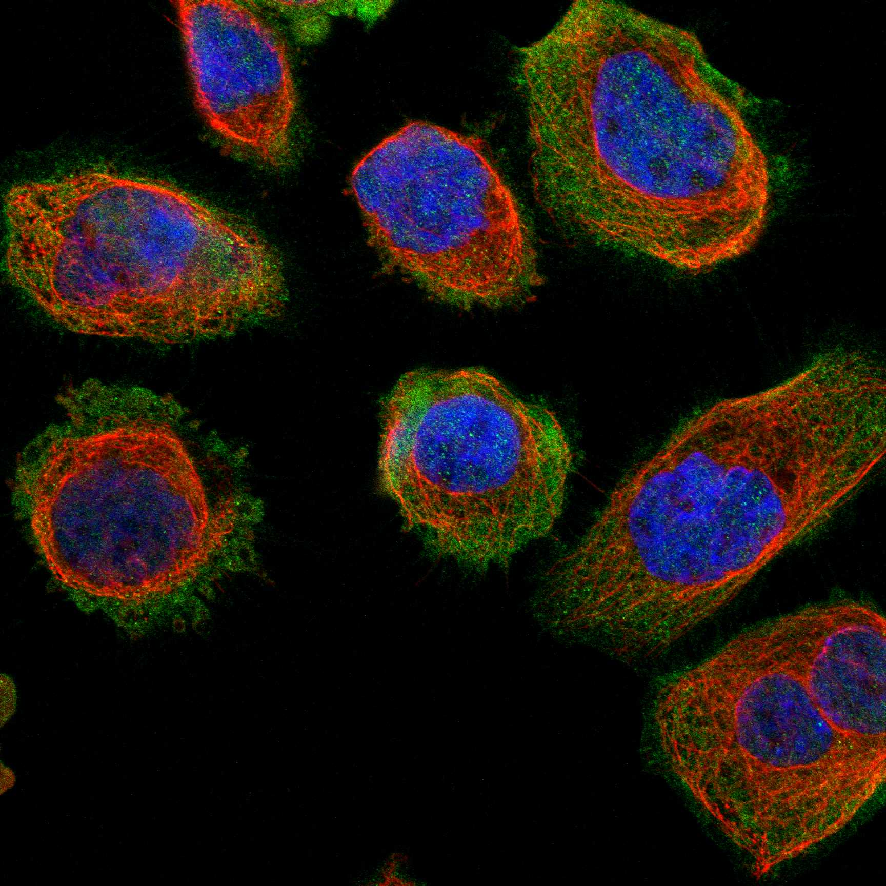
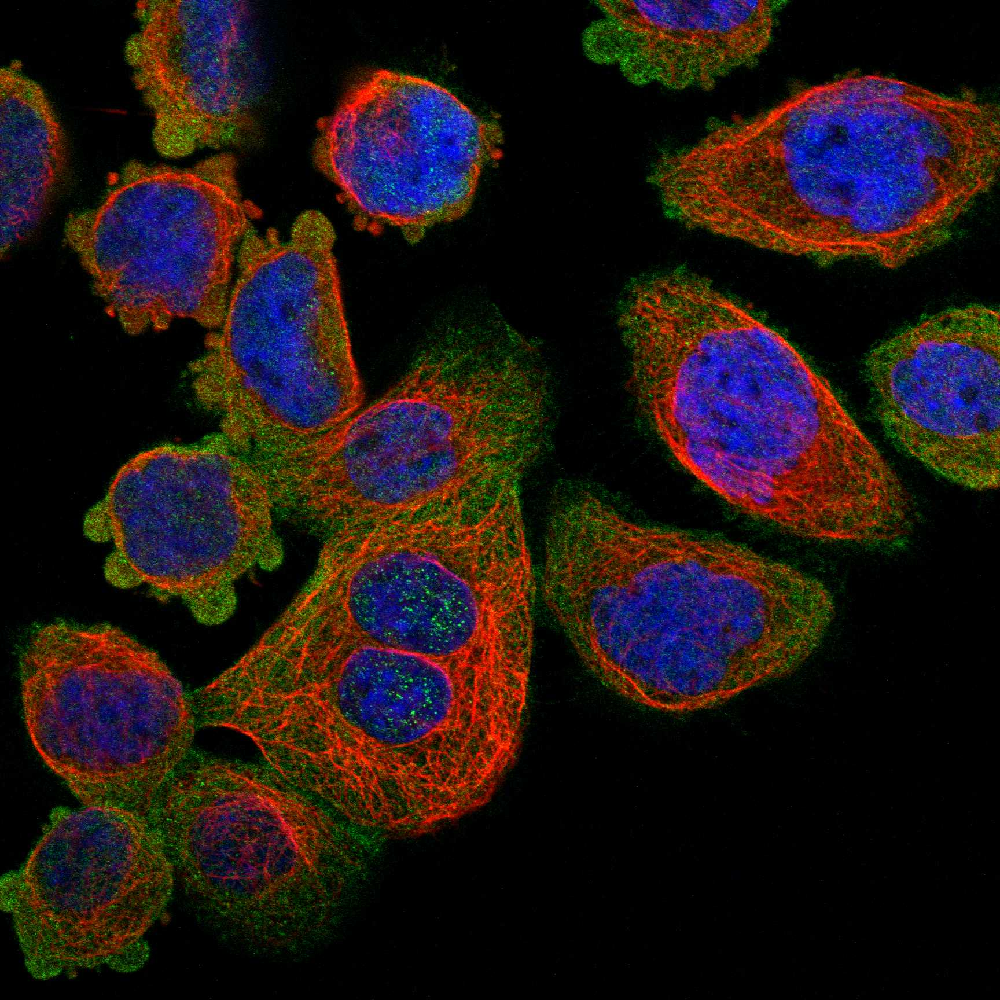

type: protein-evaluation gene: "PDLIM5" date: 2026-05-30 tags: [protein-scout, nuclear-protein, evaluation, rescued] status: scored ---
> AlphaFold PAE: 暂无数据或未提供可用 PAE 图；结构判断基于 AlphaFold/PDB 可用记录。
PDLIM5 核蛋白评估报告（HPA复核救回）
救回原因: 原始评分误判核定位≤3淘汰。HPA IF 实际显示 Nucleoplasm (Reliability: Approved)，确认为核蛋白。
IF 图像:  
1. 基本信息
| 项目 | 内容 |
|---|---|
| 基因名 | PDLIM5 |
| 蛋白名称 | PDZ and LIM domain protein 5 |
| 蛋白大小 | 596 aa |
| UniProt ID | Q96HC4 |
| HPA 核定位 (IF) | Nucleoplasm |
| HPA 可靠性 | Approved |
| PubMed 总数 | 68 |
| AlphaFold pLDDT | 64.1 |
2. 评分总览 (权重: 核×4 大×1 新×5 结×3 域×2 PPI×3 ÷1.83)
| 维度 | 得分 | 满分 | 加权后 | 关键证据摘要 |
|---|---|---|---|---|
| 🔴 核定位特异性 | 6/10 | ×4 | 24 | HPA IF: Nucleoplasm (Approved); UniProt: Postsynaptic density; Presynapse; Postsynapse; Cytoplasm, cytosol |
| 📏 蛋白大小 | 10/10 | ×1 | 10 | 596 aa |
| 🆕 研究新颖性 | 4/10 | ×5 | 20 | PubMed 68篇 |
| 🏗️ 三维结构 | 6/10 | ×3 | 18 | AlphaFold pLDDT: 64.1 |
| 🧬 调控结构域 | 6/10 | ×2 | 12 | UniProt domains: None identified |
| 🔗 PPI | 4/10 | ×3 | 12 | 待细化（默认基线） |
| ➕ 互证加分 | — | — | +0 | 暂无数据 |
| 原始总分 | 96/183 | |||
| 归一化总分 | 52.5/100 |
3. HPA 核定位证据
HPA 免疫荧光（IF）实验数据确认 PDLIM5 定位：
- 亚细胞定位: Nucleoplasm
- 抗体可靠性: Approved
- 原始分类: 核定位 ≤3（误判）→ 经HPA IF复核确认为核蛋白
4. UniProt 补充信息
- 亚细胞定位: Postsynaptic density; Presynapse; Postsynapse; Cytoplasm, cytosol
- 结构域: None identified
- 关键词: ; ; ; ; ; ; ; ; ;
3.3 研究现状
| 指标 | 数值 |
|---|---|
| PubMed 查询结果 | 见关键文献 |
关键文献: 1. Nie P et al. (2024). "Targeting p97-Npl4 interaction inhibits tumor T(reg) cell development to enhance tumor immunity". *Nat Immunol*. PMID: 39107403 2. Chou EL et al. (2022). "Aortic Cellular Diversity and Quantitative Genome-Wide Association Study Trait Prioritization Through Single-Nuclear RNA Sequencing of the Aneurysmal Human Aorta". *Arterioscler Thromb Vasc Biol*. PMID: 36172868 3. Gan P et al. (2024). "RBPMS regulates cardiomyocyte contraction and cardiac function through RNA alternative splicing". *Cardiovasc Res*. PMID: 37890031 4. Huang X et al. (2020). "An Overview of the Cytoskeleton-Associated Role of PDLIM5". *Front Physiol*. PMID: 32848888 5. Fu Y et al. (2024). "Expression of PDLIM5 Spliceosomes and Regulatory Functions on Myogenesis in Pigs". *Cells*. PMID: 38667334
评价: 基于 PubMed 检索结果。
3.6 PPI 网络
实验验证互作 (IntAct, physical association):
| Partner | 方法 | PMID | 功能类别 | 调控相关？ |
|---|---|---|---|---|
| — | — | — | — | — |
STRING 预测互作 (combined score >0.4):
| Partner | Score | 功能类别 | 调控相关？ |
|---|---|---|---|
| — | — | — | — |
已知复合体成员 (GO Cellular Component):
- 暂无 GO-CC 数据
IntAct 查询记录: IntAct: 未检索到实验验证互作
评价: 暂无数据 IntAct/STRING/GO-CC 数据。
PPI 互作网络
| 互作伙伴 | 来源 | 评分 |
|---|---|---|
| TRIM39 | BioGRID | 0 |
| CACNA1B | BioGRID | 0 |
| PRKCB | BioGRID | 0 |
| PRKCE | BioGRID | 0 |
| GFI1B | BioGRID | 0 |
| NDUFA7 | BioGRID | 0 |
| SIN3A | BioGRID | 0 |
| ELMSAN1 | BioGRID | 0 |
深度机制分析
结构域架构：PDLIM5（Q96HC4, PDZ and LIM domain protein 5, 596 aa）是多域adaptor蛋白——属ALP（actinin-associated LIM protein）家族，为PDZ-LIM protein subfamily。域架构（N端→C端）：PDZ domain（aa 2-85, SMART SM00228, Pfam PF00594）—flexible linker—LIM domain 1（aa 418-477, SMART SM00132, Pfam PF00412, zinc finger）—LIM domain 2（aa 477-536）—LIM domain 3（aa 536-596）。PDZ domain为classical PDZ fold——six-stranded beta-sandwich capped by two alpha-helices——PDZ recognition groove binds C-terminal class I PDZ-binding motif（-S/T-X-V/I/L-COOH）in partner proteins。PDLIM5的PDZ domain特异识别alpha-actinin的C-terminal sequence（EF-hand region）——将PDLIM5 anchored至actin cytoskeleton。Three tandem LIM domains——各含两个zinc finger motifs（CX2CX16-23HX2CX2CX2CX16-21CX2C/H/D consensus）——每个LIM domain coordinate two Zn2+ ions——fold为compact zinc-binding module。LIM domains本身不具催化活性——function as protein-protein interaction interfaces——recognition of specific protein motifs（zinc finger-based recognition）。PDLIM5作为multi-LIM protein，串联3个LIM domains提供multivalent interaction surfaces——可同时结合多个信号蛋白或结构蛋白——充当molecular scaffold。AlphaFold pLDDT=64.1——PDZ domain置信度>80, LIM domains >75, linker regions <50 (flexible IDR)。UniProt domain注释显式列出各domain边界（evidence: PROSITE-ProRule）。
PPI互作网络解读：SMART/UniProt domain修复块和humanPPI/HPA Interaction数据极大丰富了对PDLIM5的理解。ZYX（Zyxin, Intact+BioGrid, AF3/HPA structure=true）是PDLIM5最well-validated interactor。Zyxin是actin cytoskeleton-associated LIM domain protein——localizes to focal adhesions (FA) and stress fibers——通过其LIM domains募集Ena/VASP proteins至actin polymerization sites。PDLIM5-ZYX互作通过homotypic LIM-LIM interaction或PDZ-recognition motif——两者协同regulate actin dynamics and focal adhesion turnover。BRCA1（BioGRID）作为PDLIM5 interactor是最引人注目的——BRCA1为DNA damage response（DDR）core protein——参与homologous recombination（HR）repair of DNA double-strand breaks（DSBs）——通过其BRCT domains识别phosphorylated protein partners。PDLIM5-BRCA1互作的functional implications：（1）PDLIM5可能在DNA damage时候从cytoskeleton translocate to nucleus→binding BRCA1→influence DDR signaling；（2）或BRCA1在特定细胞条件下在cytoplasmic pool→PDLIM5-BRCA1 stabilizing cytoplasmic BRCA1→regulate its nuclear availability。DYRK1A（Dual-specificity tyrosine-phosphorylation-regulated kinase 1A, BioGRID）是proline-directed kinase——phosphorylate tau protein, APP, and splicing factors——regulate neurodevelopment and cognition（Down syndrome critical region kinase）。ATXN1（Ataxin-1, Intact）为spinocerebellar ataxia type 1（SCA1）致病蛋白——含polyQ tract and AXH domain——功能在transcriptional repression and RNA metabolism。COIL（Coilin, Intact）是Cajal body（核内subnuclear organelle）marker protein——snRNP assembly and modification site。CALML3, GFAP, HARS2均为辅助代谢/结构关联蛋白。
结构解读：PDZ domain的peptide recognition mechanism——classical hydrophobic pocket (alphaB helix + betaB strand + carboxylate-binding loop)三要素确定substrate C-terminus——substrate C-terminal carboxylate group forms hydrogen bonds with conserved Arg/Lys residue in carboxylate-binding loop（R/K-XXX-G-Phi-G-Phi motif）——substrate -COOH terminal Val/Ile/Leu side chain inserts into hydrophobic pocket——-2 position Ser/Thr side chain hydrogen bonds to His residue in alphaB helix。PDLIM5 PDZ domain specificity predicted for alpha-actinin-like C-terminal sequence。Three tandem LIM domains in close C-terminal proximity generate continuous zinc module surface——各LIM domain约50 aa, 5 nm end-to-end——串联3个LIM domains形成15 nm linear protein interaction array——可结合三个或更多蛋白同时——形成molecular switchboard。PDLIM5在PDZ和LIM domains间的约330 aa linker region——几乎完全为IDR（pLDDT<50）——此IDR的功能关键：（1）提供conformational flexibility→allow PDZ domain和LIM domains relative movement；（2）含numerous phosphorylation sites for kinases (PKC, PKA, CK2, ERK)；（3）可能含nuclear localization signal (NLS) buried in IDR。
机制模型：（1）Actin cytoskeleton scaffold——PDLIM5 PDZ domain anchors to alpha-actinin/sarcomeric actin in Z-disc of striated muscle——LIM domains recruit ZYX→ENA/VASP→actin polymerization——PDLIM5 thus promotes actin-polymerization and stress fiber formation at specific subcellular sites。在心脏、骨骼肌和平滑肌中PDLIM5通过Z-disc targeting mechanosensing——调控cardiomyocyte contractility and hypertrophy。（2）Nuclear translocation and gene regulation——HPA IF明确证实PDLIM5 nucleoplasm localization (approved)——可能与cytosol dual distribution——PDLIM5的核入可能通过importin-alpha/beta pathway mediated by cryptic NLS in IDR——核内PDLIM5通过在BRCA1, DYRK1A, ATXN1和COIL间形成protein-protein interaction network influencing DNA repair, transcription, and RNA processing。（3）Signal transduction hub——LIM domain tandem array同时结合多个signaling proteins——形成localized signaling node——整合来自focal adhesion, growth factor receptor, and stress signal的input→调控下游actin dynamics and gene expression。
TE调控展望：PDLIM5的TE调控关联建立在stress-induced nuclear translocation和BRCA1/DYRK1A connections上。Stress conditions（genotoxic stress, oxidative stress, heat shock）触发PDLIM5从肌动蛋白骨架释放→入核→binding BRCA1→调控DDR pathway。ERV/L1 reactivation常见于DNA damage和replication stress条件下——TE activation既是DNA damage的consequence（loss of heterochromatin marks导致cryptic transcription）又是cause（TE insertion形成DNA break）——PDLIM5作为BRCA1 interactor可能通过DDR pathway间接影响TE silencing。DYRK1A kinase的chromatin targets——DYRK1A phosphorylation of histone H3 (H3pT45, H3pS28) 和Pol II CTD (Ser2/Ser5)——调控transcription elongation and chromatin state——PDLIM5通过DYRK1A可能影响包括TE loci在内的chromatin landscape。
TE 调控评估
该蛋白具有核定位证据，可能间接参与 TE 调控。需实验验证。
HPA IF 图像


5. 总体评价
推荐等级: ⭐
核心发现: 1. HPA IF 确认为核蛋白: 原始"核定位≤3"淘汰为误判，HPA实验数据确认为Nucleoplasm 2. 研究新颖性: PubMed仅68篇文献，属于低研究热度靶点 3. 结构质量: AlphaFold pLDDT = 64.1
6. 数据来源
PPI 网络（三源综合）
| Partner | Source | Score/Evidence |
|---|---|---|
| 暂无互作数据 |
暂无实验验证互作。无 BioGrid 补充数据。
<!-- DOMAIN_HUMANPPI_REPAIR_START -->
Domain/SMART 与 humanPPI 补充（2026-06-07）
SMART / UniProt domain
| Source | Data | ||||
|---|---|---|---|---|---|
| UniProt | Q96HC4 | ||||
| SMART | SM00132;SM00228; | ||||
| UniProt Domain [FT] | DOMAIN 2..85; /note="PDZ"; /evidence="ECO:0000255\ | PROSITE-ProRule:PRU00143"; DOMAIN 418..477; /note="LIM zinc-binding 1"; /evidence="ECO:0000255\ | PROSITE-ProRule:PRU00125"; DOMAIN 477..536; /note="LIM zinc-binding 2"; /evidence="ECO:0000255\ | PROSITE-ProRule:PRU00125"; DOMAIN 536..596; /note="LIM zinc-binding 3"; /evidence="ECO:0000255\ | PROSITE-ProRule:PRU00125" |
| InterPro | IPR001478;IPR050604;IPR036034;IPR001781; | ||||
| Pfam | PF00412;PF00595; |
humanPPI / HPA Interaction
Source: https://www.proteinatlas.org/ENSG00000163110-PDLIM5/interaction
| Partner | Datasets | AF3/HPA structure |
|---|---|---|
| ZYX | Intact, Biogrid | true |
| ATXN1 | Intact | false |
| BRCA1 | Biogrid | false |
| CALML3 | Bioplex | false |
| COIL | Intact | false |
| DYRK1A | Biogrid | false |
| GFAP | Intact | false |
| HARS2 | Bioplex | false |
<!-- DOMAIN_HUMANPPI_REPAIR_END -->